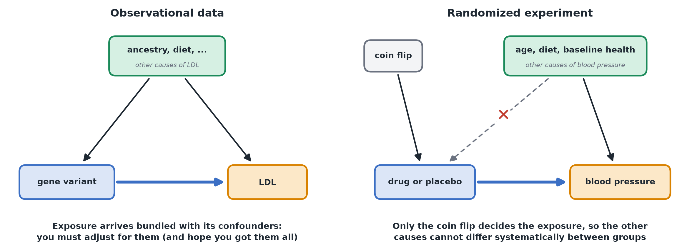

Experiments vs. Observational Data
In plain terms: if you want to make a causal claim, how the data was collected matters as much as any analysis you do afterward.
The gold standard: randomized experiments
Theo runs a trial where patients are randomly assigned to drug or placebo — comparable to a coin flip that does not depend on the patients' other characteristics. This is what makes the comparison reliable: by design, the two groups should be similar on everything else (age, diet, baseline health — measured or not), because assignment did not depend on any of it. Any difference in outcome can then be attributed to the drug.
This is also why experiments remain the strongest tool for causal claims even when they're small or imperfect: the randomization itself is doing the hard work, not a clever analysis afterward.
The harder case: observational data
Nobody can randomly assign Mia's patients a genotype — it is fixed at conception. Carriers and non-carriers may also differ in ancestry, in diet and environment, and in who got tested in the first place (for example, people with high cholesterol or a family history are tested more often). Now any observed LDL difference might be partly (or entirely) due to those other differences between carriers and non-carriers, not the variant itself. This is confounding — see Causal diagrams. (Genetics has a clever workaround for some of these cases, called Mendelian randomization, which is beyond this course.)
With observational data, a causal claim requires an extra, unverifiable leap of faith: that you've measured and accounted for everything that differs between groups and also affects the outcome. This is a much weaker position than a well-run experiment, even with a sophisticated analysis.

What this means practically
- If your exposure was randomly assigned (a real experiment): you don't need to hunt for confounders — the simple, direct group comparison is already a valid causal estimate. You might still adjust for a few pre-treatment variables, but only to tighten your estimate's precision, not to "fix" confounding that randomization already handled. Critically: never adjust for anything measured after assignment — that can undo the benefit of randomizing in the first place.
- If it wasn't (observational): you need to build a causal diagram and adjust for the right set of variables, and even then, say explicitly that the conclusion rests on the assumption that nothing important was missed.
- If you are pooling several studies (meta-analysis): the pooled estimate is only as causal as the studies it combines. Pooling observational studies gives a more precise estimate of the same possibly confounded quantity, so keep experiments and observational studies apart.
A check
Ask: did someone (or something outside anyone's control) assign this exposure/treatment, independent of everything else about the units? If yes, you're in experiment territory. If people/nature/circumstance "chose" the exposure based on their other characteristics, you're in observational territory, and causal claims need much more care.